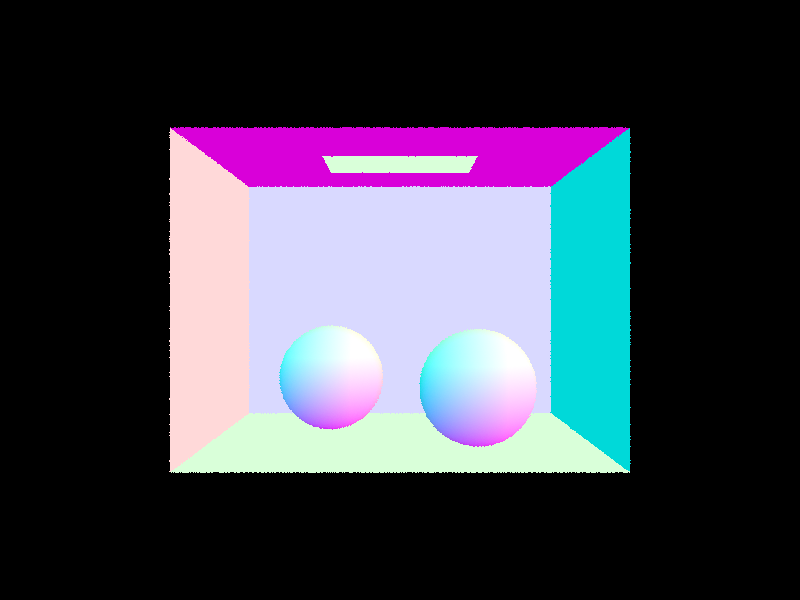
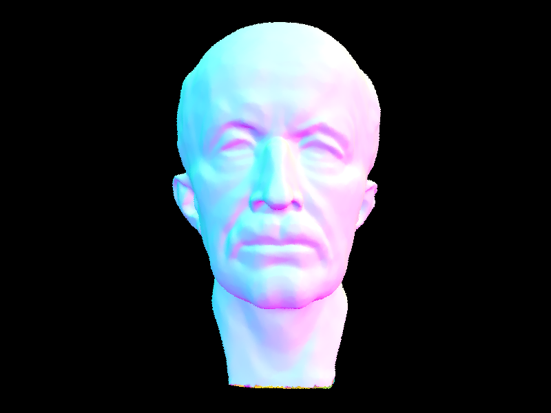
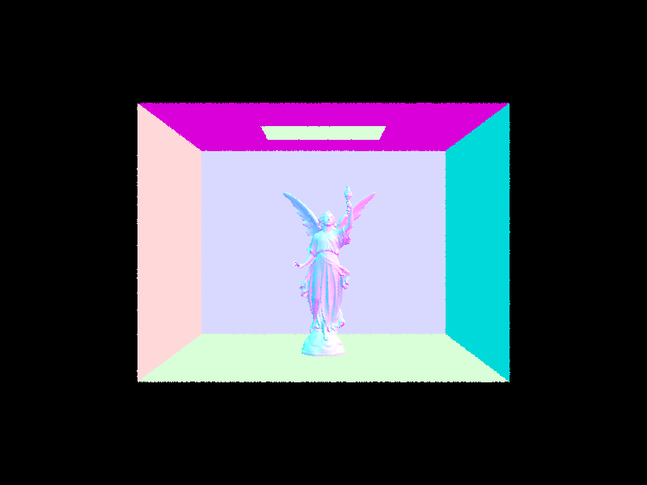
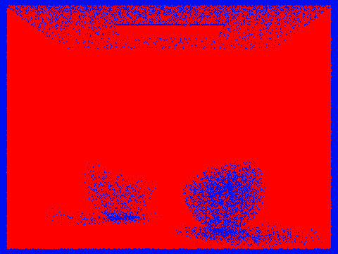
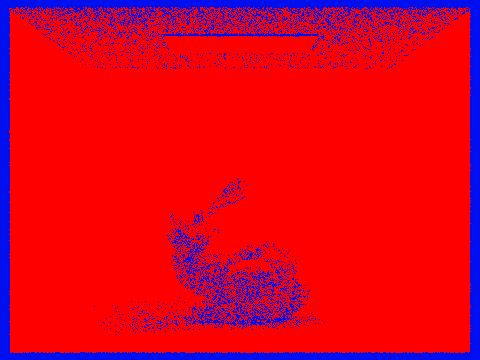

CS 184: Computer Graphics and Imaging, Sp2023
Project 3-1: Pathtracer
Shrihan Agarwal and Suhrid Saha
https://github.com/cal-cs184-student/p3-1-pathtracer-sp23-pixelmagik/tree/dim_global
Overview
We recreate a pathtracer. Pathtracers are used to realistically simulate the effect of light in a virtual scene. In brief, we perform pathtracing by tracing the path of light in reverse from a virtual camera onto the scene, calculating reflection and absorption, and determining the illumination of the ray that hits a light source. Averaging the illumination from multiple of these rays, we get a strong understanding of the color and illumination for each camera pixel.
Specifically for our project, we begin with Part 1, which deals with ray generation and intersection. Since most mesh objects are composed of triangles or spheres, we simply implement the logic for triangle and sphere intersections. Additionally, we set up conversions between the world space and image space. For ray-triangle intersection, we implement the Muller-Trumbore algorithm. For ray-sphere intersection, we solve the quadratic ray-sphere intersection formula.
In Part 2, we implement the Bounding Volume Hierarchy and use ofn bounding boxes. These are a splitting of the world space into a tree of bounding boxes such that all objects do not need to be checked for intersection against a all the rays of light, dropping the scaling to O(logN) in the number of mesh objects. For renders with high triangle counts, this is essential. We split using the mean centroid of the sub-nodes of a BVH node, and choose the axis with the largest extent to split on, allowing efficient splitting and a balanced tree.
In Part 3, we implement direct illumination, i.e. zero-bounce illuination from a light source, and one-bounce illumination. We do this by tracing rays throughout the environment while sampling from a uniform hemisphere grid at first, and later implementing importance sampling to sample directly from light sources. By sampling from light sources and weighting by importance correctly, we can reconstruct the same image at a fraction of the original cost.
In Part 4, we complete the indirect lighting of the space, and global illumination. This means that over one bounce of lighting is used, and a Russian roulette system is adopted to determine whether an array terminates or not. Combining these with the direct illumination from earlier, we can calculate the total global illumination and generate realistically lighted scenes.
In Part 5, we implement adaptive sampling. Adaptive sampling samples pixels by determining whether they require more samples, or otherwise have effectively converged, using a convergence metric. With this, sampling becomes significantly more efficient, as quickly converging pixels do not require as many samples. In all, we have created a pathtracer that can efficiently simulate illumination in 3D graphics.
Part I: Ray Generation and Scene Intersection
Walk through the ray generation and primitive intersection parts of the rendering pipeline.
RAY GENERATION:
The purpose of ray-generation is to generate a ray from the camera’s perspective but in the world coordinate system.
So we find the equation for the vector pointing from the camera to our pixel (which has coordinates x,y in the image space) but in the camera’s coordinate system.
Since the bottom left corner was at (-tan(0.5*hFov), -tan(0.5*vFov), -1) and the top right corner was (tan(0.5*hFov), tan(0.5*vFov), -1) we calculated that this vector
(still in the camera’s coordinate system) would be ((2x-1)*tan(0.5*hFov)/2, (2x-1)*tan(0.5 x vFov)/2, -1).
We then convert this vector from the camera’s coordinate system to the world’s coordinate system by multiplying by the “c2w” matrix provided- which transforms from the
camera to the world coordinates. We then call this transformed vector as the camera ray direction and normalize it. Given this normalized camera ray direction
(in the world coordinate system) and the position of the camera in ‘world’, we get a ray pointing from the camera to our pixel in the world and set its min_t and
max_t to nClip and fClip respectively.
We then use this ray to update the illumination of our pixel in the image and to check for intersections with shapes and objects and render our image accordingly.
For the former, we just use this camera generated ray, generate multiple random samples in the pixel and use “estimate_global_illumination” with this ray and average
over the samples to find the illumination of the pixel.
PRIMITIVE INTERSECTION:
We check for intersection of our camera generated rays with primitives to check for which points on our surface does the light bounce off of. We check for intersection of our rays with two kinds of primitives- triangles and spheres, since they have different intersection equations.
For the triangles, we have coordinates for its three vertices and its three normals. To find where any given ray intersects the said triangle, we use the Möller–Trumbore ray-triangle intersection algorithm, which uses the vertices and the origin and direction vector of our ray to find not only the nearest intersection point but also the barycentric coordinates of this point. We then also use these barycentric coordinates and the three normals of our triangle to find the normal vector of the intersection. We also know if these barycentric coordinates lie outside the range (0,1) or the ‘t’ for which the ray intersects lies outside the range (min_t, max_t) then the intersection is false.
For the spheres, we have coordinates for its center and the value for its radius. We use the equations in the ray-sphere intersection slides from the ray tracing lecture to get a quadratic equation, solving which gives us either two, one or zero points of intersection between the ray and sphere. The ‘t’ values at these intersections are then checked for being within the range (min_t, max_t), because if they are not, we return false. We choose the point closer to the camera in case of two points. We also find the normal at the nearest point of intersection by taking the difference between the coordinates of the point of intersection and the coordinates of the origin.
In either primitive intersection, we store the information like the value of t, the normal vector at intersection, the bsdf and the primitive itself in an intersection object which we have a pointer to. This is used later when we compute illumination with bounces.
Explain the triangle intersection algorithm you implemented in your own words.
To find where any given ray intersects the triangle, we use the Möller–Trumbore ray-triangle intersection algorithm, which uses the vertices of the triangle and the origin and direction vector of our ray to find not only the nearest intersection point but also the barycentric coordinates of this point. We then also use these barycentric coordinates and the three normals of our triangle to find the normal vector of the intersection. The algorithm is based on the following math: We know that for barycentric coordinates (1-b1-b2), b1 and b2 and vertices v1, v2 and v3 out point of intersection is P = (1-b1-b2)*v1 + b1*v2 + b2*v3. We also know that for some t, we must have P = o + t*d where the ray has origin o and direction vector d. Then we have o + t*d = (1-b1-b2)*v1 + b1*v2 + b2*v3 which gives us a system of three linear equations to solve for t, b1 and b2. If we use Cramer’s rule to solve for this 3d vector and simplify the determinant in the denominator as a combination of a cross product and dot product, we get three equations for t, b1 and b2, hence giving us our solution. This final equation for the solution only takes 1 division, 27 multiplications and 17 additions to compute, much faster than any other method we can use and is mentioned in the lecture slides- entirely in terms of v1, v2, v3, o and d. We use exactly this in our code. We then also use (1-b1-b2), b1 and b2 and the three normals of our triangle n1, n2, n3 to find the normal vector n (= (1-b1-b2)*n1 + b1*n2 + b2*n3) of the intersection. We also know if these barycentric coordinates lie outside the range (0,1) or the ‘t’ for which the ray intersects lies outside the range (min_t, max_t) then the intersection is false.
Show images with normal shading for a few small .dae files.

|
|

|
Part II: Bounding Volume Hierarchy
Walk through your BVH construction algorithm. Explain the heuristic you chose for picking the splitting point.We construct our Bounding Volume Hierarchy, or simply BVH, as follows: We have an iterator for all the primitives in our BVH, so we first iterate over all the bounding boxes of these primitives to get 1) a bounding box that covers all the bounding boxes in our shape; 2) a bounding box that covers the centroids of these bounding boxes, calling this our ‘centroid box’; 3) a count of all the bounding boxes in our BVH. If this bounding box count is zero we return NULL for our BVH. If this bounding box count is less than or equal to the chosen maximum leaf size then we return a leaf node as our BVH- with just a start and an end and no left and right child nodes. Otherwise, we need to split this BVH into a left BVH node and a right BVH node. The heuristic for the split we use is the average of all centroids as our midpoint along the longest axis. We use our ‘centroid box’ and take its maximum extent- the x, y and z extents give us the differences between the minimum and maximum x, y and z coordinates respectively. This maximum extent would give us the axis along which splitting is most likely to give equally big left and right child nodes, since this axis would be the longest, which makes our BVH binary tree more balanced. We also iterate over every primitive and its corresponding bounding box in our entire parent BVH node and take the average of all these centroids. Given our best axis (x, y or z) we again iterate over every primitive and its corresponding bounding box in our entire parent BVH node and split each bounding box into either the left child node or the right child node. Each box is split into either depending on whether its centroid lies to the left or the right of the average of all the centroids we previously calculated. Once we have the split ready, that is, we have iterators for primitives in our left node and our right node respectively, we recursively call our construct function for each child node so they continue to be split into further child nodes until we reach leaves, hence forming our BVH binary tree.
Show images with normal shading for a few large .dae files that you can only render with BVH acceleration.

|

|

|
Compare rendering times on a few scenes with moderately complex geometries with and without BVH acceleration. Present your results in a one-paragraph analysis.
We first rendered cow.dae - Without implementing BVH nodes we had a rendering time of 10.482 seconds, but with implementing BVH nodes it dropped to 0.2328 second, showing that implementing BVH dropped out time by at least 45x. Similarly for beetle,dae - Without BVH we had a rendering time of 14.6985 seconds, but with BVH nodes it was 0.6184 second, showing a 23.76x drop.
Part III: Direct Illumination
Walk through both implementations of the direct lighting function.There are two implementations of direct lighting, that differ in the type of sampling.
The first is uniform hemisphere sampled direct illumination. In uniform hemisphere sampling, at each reflection point of the ray, lighting contributions are sampled from all directions on the hemisphere with axis normal to the surface directly. That is, the lighting at a reflection point is equally sampled from all directions, regardless of the positions of actual light sources. To calculate the one-bounce illumination, we first generate a ray from the camera until it intersects an object in a direction "w_out". We calculate the outgoing light in a randomly sampled direction using reflectance/emissivity of the object according to its BSDF, and continue to trace the ray in the direction "w_in". If w_in happens to make contact with an emitting object, the illuminance of the camera pixel's sample is weighted by its emission: effectively a combination of the emissivity and the reflectance. If the ray does not hit an emitting object, the pixel illuminance samples 0. Therefore, averaging many of these rays, we get an accurate estimate of the illuminance.
However, this is inefficient as the majority of rays are likely to end up away from a light source. Therefore, we instead use importance sampling. Importance sampling samples "w_in" directly from the light source direction, since we know the location of the light sources. If there is a point source, we only sample it once for each reflection point. For an extended source, the light is sampled in directions of the light source and averaged. This would give us a biased estimate of the illuminance, since we are only considering light sources. We therefore accordingly weight the samples by the inverse of their probability of being chosen. This is output by the sample_L function. With the correct weighting, we get an efficient method of sampling and deriving the direct illumination.
Show some images rendered with both implementations of the direct lighting function.
Both images below are rendered with the samples per pixel = 64, light rays = 32, depth = 6.

|

|
Focus on one particular scene with at least one area light and compare the noise levels in soft shadows when rendering with 1, 4, 16, and 64 light rays (the -l flag) and with 1 sample per pixel (the -s flag) using light sampling, not uniform hemisphere sampling.
We see here in the shadows that the sampling becomes increasingly smoothed out with an increased number of light rays. This ensures that there is sufficient sampling of the lights and directions in order for the shadow to be correctly calculated.

|

|

|

|
Compare the results between uniform hemisphere sampling and lighting sampling in a one-paragraph analysis.
Seeing the bunny in the previous figure, generated using both methods, we notice a few significant differences. The first is that the uniform sampling is significantly more noisy, since the majority of light rays end up not contributing the the illumination calculation, and wasting samples. Secondly, the light sampling appears to be unbiased on comparison, indicating that the light sampling was indeed correct, and normalized by the correct probability of a particular light sample being drawn.
Part IV: Global Illumination
Walk through your implementation of the indirect lighting function.The indirect lighting function adds to the direct illumination earlier. Not only considering one-bounce and zero-bounce illumination, the indirect lighting function now calculates multiple bounces at once. We do this by recursion - at each bounce, the ray has a termination probability, which we set to 0.3, reweighting reflectance and emission along the way. Using each of these rays as samples, we get indirect illumination in addition to direct illumination. Besides the Russian roulette termination, we also implement a max_depth in order to ensure computational efficiency. It is not likely that the rays always reach max depth, but if they do, we know their contribution will likely be low anyway.
Show some images rendered with global (direct and indirect) illumination. Use 1024 samples per pixel. <

|

|
Pick one scene and compare rendered views first with only direct illumination, then only indirect illumination. Use 1024 samples per pixel. (You will have to edit PathTracer::at_least_one_bounce_radiance(...) in your code to generate these views.)
We see that from direct illumination only the light's first bounce is visible. For example, we can see the direct light from the light source and the one-bounce light. For the indirect lighting the ambient light is seen. We can see a colored reflection on the sides of the two balls. This is evidence of two+ bounce illumination.

|

|
For CBbunny.dae, compare rendered views with max_ray_depth set to 0, 1, 2, 3, and 100 (the -m flag). Use 1024 samples per pixel.
We render the images below. We find that beyond m = 2, the difference is very subtle, and not immediately clear. However, the difference between m = 2 and m = 100 is barely discernable in the edges of the walls. We see in the m = 1 case that the ceiling is not visible, and in the m = 0 case that only the direct lighting can be seen. The shadows also become significantly smoother with higher values of m.

|

|

|

|
|
|
We render the images below. The values of samples per pixel change the image noise dramatically, and with increasing numbers of samples-per-pixel, the image converges to a much more reasonable estimate of the true illumination.

|

|

|

|

|

|

|
Part V: Adaptive Sampling
Explain adaptive sampling. Walk through your implementation of the adaptive sampling.The point of adaptive sampling is to avoid the problem of using a static and high number of samples per pixel, by only using more samples in the more difficult parts of the image, that is where the illumination doesn’t converge as easily. So what we do is we find a convergence criterion, that is, some value in terms of the illuminations of our samples must be within some desired tolerance, and once this criterion is satisfied for a given pixel we stop sampling. This makes sure that we do not compromise on noise despite reducing the total number of samples used in pixels. We implemented adaptive sampling as follows: for each pixel, we compute the illumination (using global illumination) by taking the average over multiple random samples. As we take each sample, for every samples_per_batch (set to 32) samples, we maintain the mean and variance of the “illum()” of our illumination vectors (which have R, G and B components). If 1.96 times the standard deviation (square root of variance) divided by the square root of the number of samples so far is within the mean times the maximum tolerance (which we set to a default of 0.05) then we know our samples inside this pixel have converged within our desired tolerance. This equation (using a factor of 1.96) is based on wanting a 95% confidence interval. If this criterion is satisfied we stop sampling and return the average illumination for this pixel so far. Otherwise we continue sampling either until the criterion is satisfied for a higher number of samples or if the number of samples has reached its limit (set to ns_aa).
Pick two scenes and render them with at least 2048 samples per pixel. Show a good sampling rate image with clearly visible differences in sampling rate over various regions and pixels. Include both your sample rate image, which shows your how your adaptive sampling changes depending on which part of the image you are rendering, and your noise-free rendered result. Use 1 sample per light and at least 5 for max ray depth.
|
|
|
|

|

|
Link to Github: https://github.com/cal-cs184-student/p3-1-pathtracer-sp23-pixelmagik/tree/dim_global
We (Suhrid and Shrihan) worked on this project together. We took turns coding on each of our computers and periodically pushing the code to GitHub to match between us. We did not work on the same function simultaneously due to merge errors, but instead worked together, with one person reading the spec as the other typed. The project went well, but we took 4 slip days to complete the project beyond expectations. We learned everything to do with ray tracing BVH, illumination, and how to perform effective debugging.